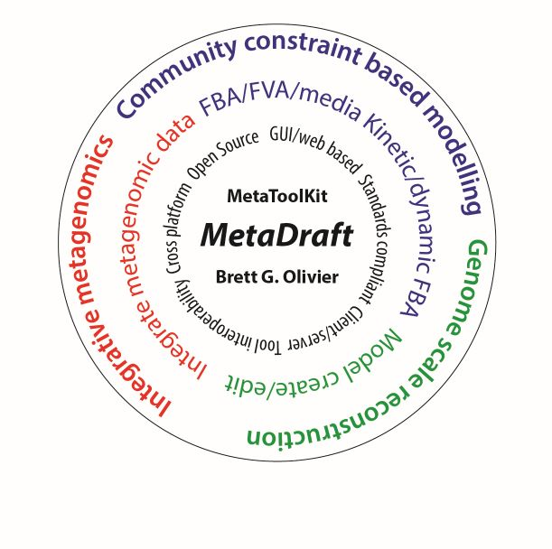

A graphical interface for the user oriented reconstrution of genome-scale metabolic models. MetaDraft assists modellers to transform their sequences into draft metabolic reconstructions by way of a flexible database system.
MetaDraft Forms part of the MetaToolkit Modelling Suite developed in the Systems Bioinformatics Group at the Vrije Universiteit Amsterdam.
Currently available on request MetaDraft will be publicly available for download in December 2017.
Metadraft is developed as utilizing Python and Qt thus taking advantage of both platforms cross-platform capabilities and extensibility. MetaDraft makes extensive use of the PySCeS CBMPy.
MetaDraft is fully compliant with and takes full advantage of the latest model encoding and storage standards in Systems Biology. This includes the SBML Level 3 FBC and COMBINE Archive standards.
MetaDraft will be made available as Open Source Software.
You have control over the number and ranking of template reactions
Based on the all available annotation you have full control over what components are included in the final draft reconstruction.
This software is developed as part of the modelling activities of the Bas Teusink's Systems Bioinformatics group.
"Our group studies the molecular networks inside cells that give rise to cell behaviour. We focus on the principles and general understanding of how those networks adapt in response to environmental and genetic changes. We apply the insights and methods in a biotechnological and biomedical setting. We combine mathematical modelling, theory, and experiments."